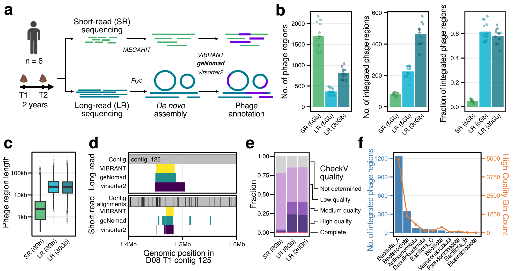
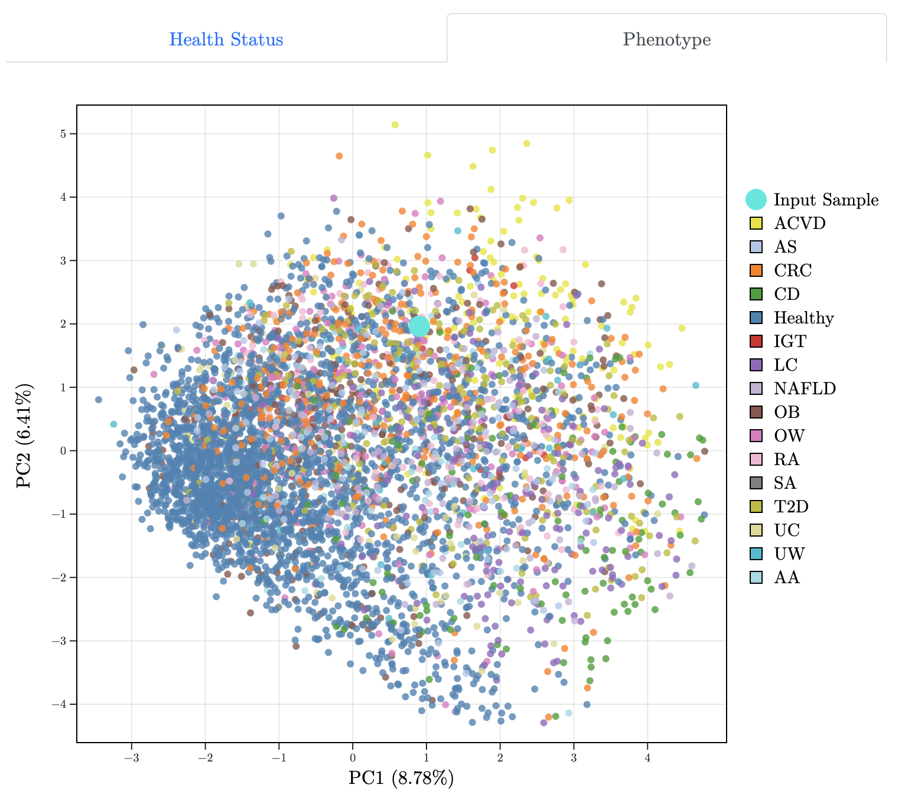
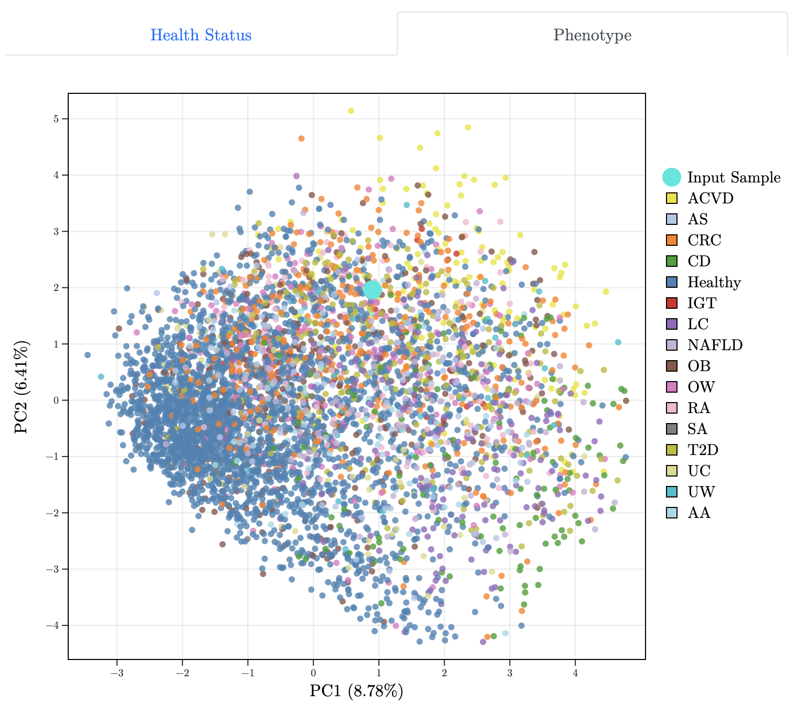
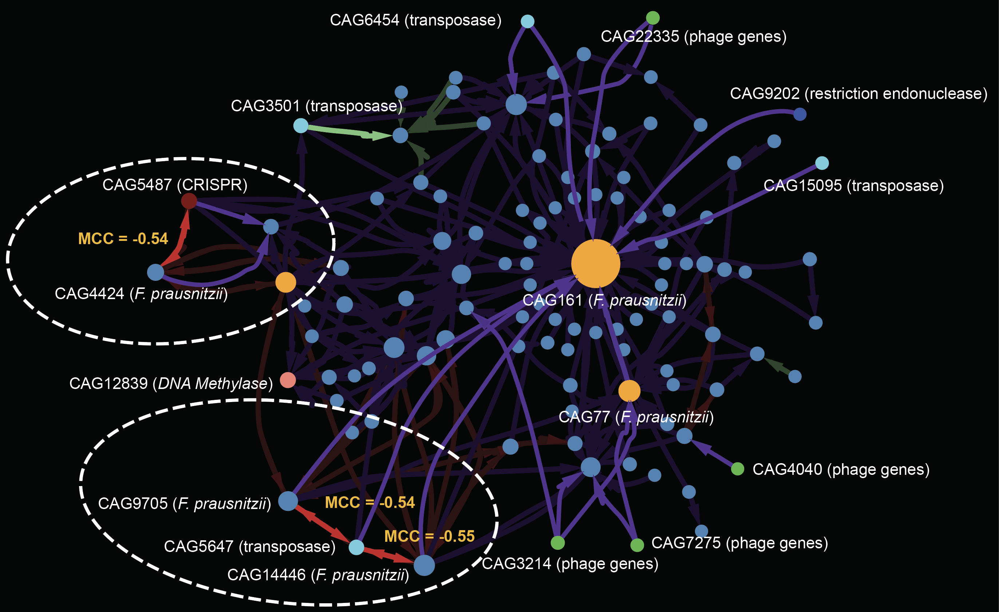

I'm currently doing PhD rotations! I graduated summa cum laude with a BS/MS in computer science from the University of Minnesota in 2024. While there, I worked with Chad Myers on developing machine learning models for cancer genetic dependency prediction, Jaeyun Sung on translating gut microbiome data into health insights, and Dan Knights on dissecting the structure and function of the infant gut microbiome.
Publications
*/** - equal contribution; # - co-corresponding author

Discovering Broader Host Ranges and an IS-bound Prophage Class Through Long-Read Metagenomics.
Jakob Wirbel*, Angela S. Hickey*, Daniel Chang, Nora J. Enright, Mai Dvorak, Rachael B. Chanin, Danica T. Schmidtke, and Ami S. Bhatt.
bioRxiv (2025).
[thread]
Genome modeling and design across all domains of life with Evo 2.
Garyk Brixi*, Matthew Durrant*, Jerome Ku*, Michael Poli*, Greg Brockman**, Daniel Chang**, Gabriel Gonzalez**, Samuel King**, David Li**, Aditi Merchant**, Mohsen Naghipourfar**, Eric Nguyen**, Chiara Ricci-Tam**, David Romero**, Gwanggyu Sun**, Ali Taghibakshi**, Anton Vorontsov**, Brandon Yang**, et al., Dave Burke, Hani Goodarzi, Patrick Hsu#, and Brian Hie#.
bioRxiv (2025).
[code][blog][thread]
Gut Microbiome Wellness Index 2 Enhances Health Status Prediction from Gut Microbiome Taxonomic Profiles.
Daniel Chang*, Vinod K. Gupta*, Benjamin Hur, Sergio Cobo-López, Kevin Y. Cunningham, Nam Soo Han, Insuk Lee, Vanessa L. Kronzer, Levi M. Teigen, Lioudmila V. Karnatovskaia, Erin E. Longbrake, John M. Davis III, Heidi Nelson, and Jaeyun Sung.
Nature Communications (2024).
[pdf][code][blog]
Ridge Regression Baseline Model Outperforms Deep Learning Method for Cancer Genetic Dependency Prediction.
Daniel Chang, Xiang Zhang, and Chad Myers.
bioRxiv (2023).
[code]
Evaluating the Prebiotic Effect of Oligosaccharides on Gut Microbiome Wellness Using in vitro Fecal Fermentation.
Dong Hyeon Lee*, Hyunbin Seong*, Daniel Chang, Vinod K. Gupta, Jiseung Kim, Seongwon Cheon, Geonhee Kim, Jaeyun Sung#, and Nam Soo Han#.
npj Science of Food (2023).
[pdf]
 

GMWI-webtool: A User-friendly Browser Application for Assessing Health through Metagenomic Gut Microbiome Profiling.
Daniel Chang, Vinod K. Gupta, Benjamin Hur, Kevin Y. Cunningham, and Jaeyun Sung.
Bioinformatics (2023).
[pdf][code]
TaxiBGC: a Taxonomy-guided Approach for Profiling Experimentally Characterized Microbial Biosynthetic Gene Clusters in Metagenomes.
Vinod K. Gupta, Utpal Bakshi, Daniel Chang, Aileen R. Lee, John M. Davis III, Sriram Chandrasekaran, Yong-Su Jin, Michael F. Freeman, and Jaeyun Sung.
mSystems (2022).
[pdf][code]
Presentations

Metagenomic MAGIC: Dissecting the Structure and Function of the Developing Gut Microbiome.
Daniel Chang, Suzie Hoops, and Dan Knights.
Minnesota Supercomputing Institute Research Exhibition. Minneapolis, MN. Apr 25, 2023. (Poster Award - $1,000)
Gut Microbiome Wellness Index 2 for Enhanced Health Status Prediction from Gut Microbiome Taxonomic Profiles. Daniel Chang, Vinod K. Gupta, and Jaeyun Sung. Mayo Clinic Individualizing Medicine Conference. Rochester, MN. Nov 2, 2022.
Gut Microbiome Wellness Index 2 for Enhanced Health Status Prediction from Gut Microbiome Taxonomic Profiles. Daniel Chang, Vinod K. Gupta, and Jaeyun Sung. Cold Spring Harbor Microbiome Meeting. Laurel Hollow, NY. Oct 27, 2022.
Teaching
Teaching Assistant, CSCI 5481: Computational Techniques for Genomics, Prof. Dan Knights, University of Minnesota, Spring 2023